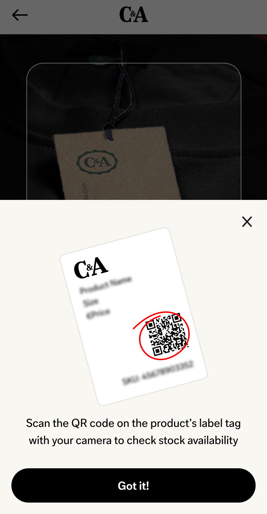
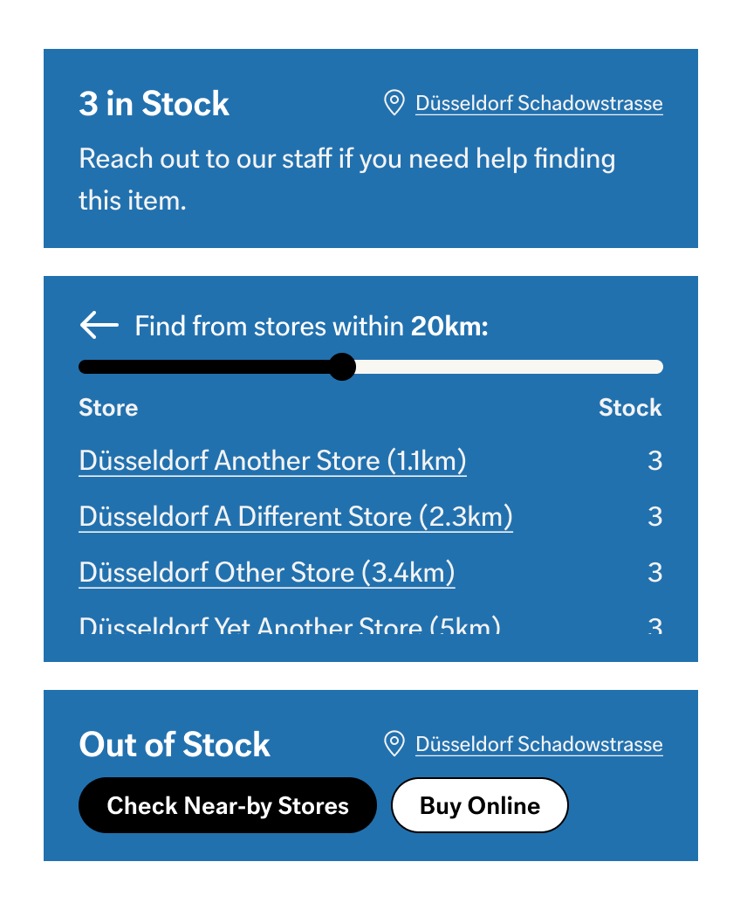

Vy for C&A
Rethinking Online Customer Experience during Offline Shopping
UX Research
CX Strategy Design
UX Design
Problem Description:
C&A customers struggle with locating the items due to the typically large size of C&A's stores and their large catalogue of products. When a customer consults C&A staffs about stocks, they will use an internal product that give the needed information.
We saw an opportunity to empower customers and make information more accessible with a public version of this internal utility product - Digital Assistant. I helped C&A solve this challenge with the integration of the Digital Assistant product into customers' offline shopping experience to achieve two strategic goals: 1. Optimize C&A's in-store Customer Experience; 2. Introduce offline shoppers to C&A's online ecosystem to nurture engagement and drive loyalty.
This work was done during my time at SCHMACK where I am leading the CX Strategy/UX Design vertical. SCHMACK collaborated with C&A on the CX/UX Design of this project.
Deliverables: Seamless Offline to Online Experience
Step 1: Land
Step 2: Scan
Step 3: Find
Context
About C&A
C&A is a major German fashion brand with stores in various European countries.

About the Users
Shoppers at C&A stores. Given that C&A is a household name in most of the markets it operates in, the assumption is that the shoppers will come from all walks of life.

About Digital Assistant Product
The project centers around the hypothesis that if the staffs scan item's label using an internal product to get stock information, we can empower customers and make information more accessible by giving customers access to an external version of the product.
Challenges
Research from C&A and collaborative ideations estaiblished the following challenges surrounding the project and product:
Lack of Information Access
In-store shoppers who want information about stocks have to either manually search or consult with the staffs, which might not be feasible if they are in a changing room.
Offline-to-Online Transition
Integrating a digital solution into offline shopping experience requires a strategic CX approach to ensure a natural and smooth experience.
Short Time-to-Market
We worked with a 2-month timeline to launch a MVP version at selected stores to validate the hypothesis around the product and users.
KPI:
Success metrics that would decide the success of the MVP (and the project) for larger scale implemenation:
Product Scan
In-store Purchase
Project Overview:
The project comprises of 4 main phases:
Discovery
Research competitors' solutions and alternatives currently available to shoppers
Current State Assessment
Map out customer journey to gain an overview of the experience and opportunities for improvement
CX Strategy
Formulate the strategy for integrating the Digital Assistant in-store
UX/UI Design
Create the product's UX/UI Design and In-store communication design
Implementation
Handover to C&A Product team for implementation and testing
1. Discovery & Current State Assessment
In this phase, we conducted 3 keys activities to gain a good understanding of the challenge and identify opportunities for integrating Digital Assistant:
Map out the in-store shopping customer journey with Digital Assitant: With an overview of the full customer journey, it is clear that the majority of the of the interaction happens offline. The experience that happens before and after users' interaction with the Digital Assistant product is just as, if not more, important than the interaction with the product in achieving the goal of increasing in-store purchases.

Research current solutions to provide stock information to customers: Many E-commerce Platforms provides stock availability information within product information page. The users have to manually look for the product themselves to get to the product information page. Moreover, this method is not always top-of-mind for in-store shoppers. C&A website and app also currently offer this feature with the same problems.
C&A and other brands' availability feature in product information page.
Competitor CX field research: We visited fashion stores of brands with similar price range and target customer to get an understanding of how they solve similar challenges.
Uniqlo, a C&A competitor, provdies tailoring services information in dressing rooms.
2. CX Strategy
From our research activities, we arrived at the following discoveries & opportunities for CX/UX improvement
Important touchpoint: dressing rooms
Problems with existing methods of finding stock availability: manual search and not-top-of-mind.
I led the creatation of a CX Strategy in the project to guide the approach to address the challenges and leverage the opportunities identified previously when designing the UI and UX of the project:
Connect Offline-to-Online Touchpoints & Top-of-Mind Choice
The customer journey willfeature consistent color use to connect the offline to online touchpoints and make a strong visual impression about Digital Assistant to access stock information.
Minimizing Friction to Information
We need to provide alternative size and stock information when users realize they need it: dressing room.
3. Design
The UX/UI design makes use of C&A's denim blue extensively across offline and online touchpoints in the customer journey. C&A denim blue is selected because blue is usually associated with technology and digital solutions, yet at the same time, C&A denim blue is a muted blue color that blends in nicely with the environment at any C&A stores and signify users' interwining online-offline experience when using Digital Assistant.
C&A denim blue used in In-store communication design and Digital Assitant interface design
To address the challenges with manually finding a product information page to access stock availability information for in-store shoppers, the design of Digital Assitant makes use of three key elements:
QR Code
All C&A products have QR codes on the label tags which can be used to direct users to the relevant product information page without users manually typing the product name.
Location Data
When users scan the QR code to use Digital Assistant, we can identify users' current location and display relevant stock information directly without additional step of selecting store location.
Floating Availability Modal
The stock availability information is displayed within a floating modal in C&A's denim blue to capture users' attention and provide the information they are looking for directly.
Digital Assistant Design
4. Afterthoughts
By empowering in-store shoppers with direct and easy access to stock information, Digital Assistant helps C&A achieved the strategic goals set out intitially:
Optimize C&A's in-store Customer Experience to drive more in-store purchases
Introduce offline shoppers who have had minimal exposure to C&A's online ecosystem to nurture engagement and drive loyalty
I thoroughly enjoyed my experience working on this project. It captured nicely the importance of a holistic view in designing experience and gave me the perfect playground where I can make the best of my strong suit in designing UX grounded in a CX strategy that utilizes understanding of users, technology and design to connect business goals and users' needs. Special thanks to Esaias Widén Oljons (UI Designer), Alexander Hoinard (Project Manager) and the C&A team for your work in this project.